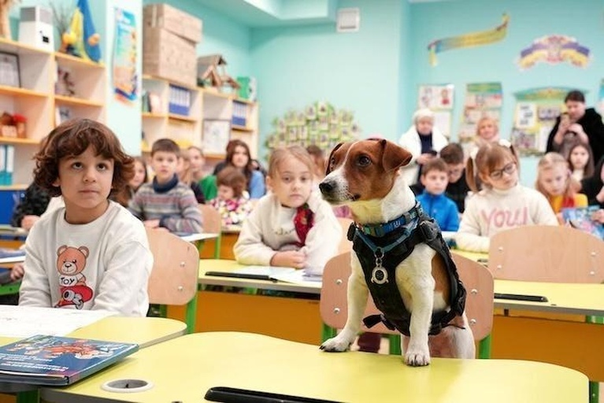

UNICEF-Supported Landmine Safety Programs Protect Children In UkraineAfter two years of war, an estimated one-third of Ukraine is littered with landmines. UNICEF-supported education programs are teaching children how to stay safe. Ukraine is one of the most heavily mined countries in the world "Don't touch anything — it can explode," 4-year-old Dima warned his classmates in Kherson, Ukraine. "You shouldn't lift anything off the ground." He pointed to a colorful scene in a picture book. The illustrations are playful, but the message is serious: There are landmines concealed among the flowers. The book, distributed by UNICEF, is a must-read for young children in Ukraine, where two years of war have left one-third of the country covered with mines and explosive remnants of war. As aerial bombardment continues, they face trauma and danger not only from the skies, but also in their own backyards. Explosive objects can be found in rivers, forests and fields, on roadsides, in hospitals, in residential buildings and playgrounds — even in children’s toys The UN Human Rights Monitoring Mission in Ukraine has confirmed that over the past two years, mines and other explosive devices caused 124 civilian casualties; 25 children were killed and 99 injured. The casualty numbers among children are getting higher with every year of the war. To keep children safe, UNICEF supports age-appropriate landmine awareness classes across the country, provides online training in mine safety for educators and rescuers, and distributes mine risk instruction materials including comic books, cartoons, posters and games. In 2023, to reach children in areas where schools have been damaged or destroyed, UNICEF donated 15 specially equipped vehicles to Ukraine's State Emergency Services (SES). The vehicles are used to provide mobile safety classes for children in 10 regions. During the lessons, trained SES and National Police instructors use interactive and game formats developed by UNICEF and Ukraine's Ministry of Education and Science. Spreading the word about mine safety with Patron, a bomb-sniffing dog Mykhailo Iliev, head of the SES pyrotechnic works group in the Chernihivska region, even brings his bomb-sniffing Jack Russell Terrier, Patron, to visit classrooms to draw children's attention to the importance of mine safety. Patron, whose name means "ammo" in Ukrainian, became a canine celebrity after finding more than 200 undetonated explosive devices in the first two months of the war in 2022. He went on to become the star of a popular cartoon, created with support from UNICEF. "Mine danger can be found almost anywhere," said Kyrylo, 11, after a visit from Patron. Students are taught to follow three simple rules if they discover an unknown object: "Do not approach, do not touch, call 101," said 11-year-old Dasha. UNICEF has been providing mine safety education in Ukraine since 2014 Long after a conflict is resolved, explosive devices remain a threat, the lethal legacy of wartime. Children in Ukraine are suffering from the effects of cluster munitions used in the war, which have been globally banned due to the immediate and long-term harm they cause to civilians. These munitions leave behind unexploded remnants that act as landmines for years. "This problem is with us for life,” said Sofia, a mine safety instructor in Lviv, Ukraine. “We may not be able to fully protect children from the danger of mines, but we can warn them and teach them to be careful.” UNICEF plans to reach more than 1.3 million children with landmine safety instruction in 2024 In 2023, UNICEF, in partnership with educators, social workers and NGO staff, reached more than 1 million children and over 343,000 caregivers in Ukraine with landmine education programs. More than 5,500 educators, social workers and Ukrainian civil society workers were trained to deliver mine risk messages to children. Over 8 million people were reached via UNICEF's mass messaging campaign through various online and offline activities and interventions. During 2024, UNICEF plans to train over 1.3 million children across the country in the fundamentals of landmine safety. "We teach safe behavior in the environment even to the youngest children," said Artem Homin, chief inspector of fire safety in the emergency safety department of the SES in the Kharkivska region. "It is important at any time and now, while the war is on, this knowledge is saving their lives." Wherever children's lives and futures are at risk, UNICEF is there to help. Your contribution can make a difference. Please donate. |
 |